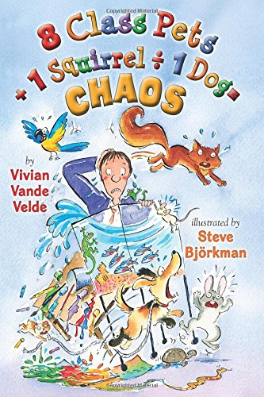

8 Class Pets + 1 Squirrel / 1 Dog = CHAOS
Twitch, the squirrel that hangs around school, accidentally gets trapped inside. But he's not alone. That crazy dog, Cuddles, followed him in. While trying to escape from Cuddles, Twitch meets many different animals and finds friends in places he didn't know he had. Will the friends help him or help Cuddles?
